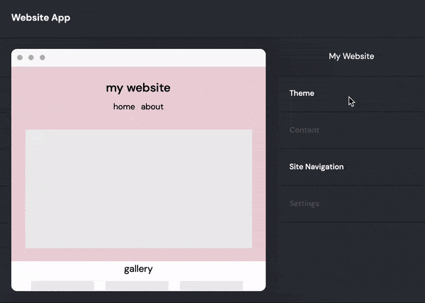

01 GoDaddy Website Builder Theme Editor Redesign
Role: UX and Visual Designer
Director and Mentors: Josh Berk, Rachel Beneke, Ben Adam, Tony B.
Last summer I sketched wireframes, conducted user testing and coded a fully functional prototype to improve the Website Builder UX. Specifically, I worked to improve the ways in which users can edit the look and feel of their website both at the site-wide and individual section level. In addition, I also worked with visual designers to create website templates that are featured on GoDaddy's front of site.
Introduction to Website Builder and Its Users
GoDaddy’s Website Builder was made to help small business owners with little to no knowledge of web design, SEO or online marketing establish a presence online. Our customers could be at any stage of the business cycle so it is imperative that we diversify our services and make them easy-to-use. Important parts of a website include brand design and content; thus, we aim to create a website building UX that emphasizes the importance of and simplifies the process of creating these two things.
The Core Problem
In the old version of Website Builder, if users wanted to change color, font or the theme of their entire website, they would only have access to those options via a separate “theme” tab. This makes editing section-wide features such as accent color (which can only be changed after the site-wide color is changed) cumbersome because users would have to go back and forth between the start page and the theme page to make changes as explained below. Not to mention, the theme page is quite laggy as the server needs to load all theme options and their corresponding previews.
How to Change Theme Color to Pink and Header Accent Color to White With Old UX
After analyzing user feedback that arose from these issues, the UX researchers and PM on my team introduced a core problem for me to solve: Users cannot change the look and feel of their websites—both at the site-wide and section-wide levels—quickly and conveniently.
Drafting Potential Solutions
I conducted a market analysis and saw that both Wix and Squarespace put site-wide editing options and section-wide editing options in the same editing panel. This not only makes it more convenient for users to access all editing options at once but also makes editing options more visible (note: Wix and Squarespace have changed UX since doing this project). I decided designing a similar solution would improve GoDaddy’s current product.
I drafted three versions for the section-wide portion of the theme editing panel:
- Option A: would allow users to use two dropdown menus to change the page and/or section of a page they are editing without having to interact with the website preview.
- Option B: does not afford users the ability to navigate their website with the editing panel. Instead, it simply indicates the page and section they are editing and encourages users to interact with the web preview. When a user clicks on a section the section options portion of the editing panel will change in response.
- Option C: similar to option B but vertically condenses the page and section indicator to conserve screen real estate. Does not show "section".
- Option D: similar to option B but instead uses breadcrumbs to indicate page and section.
I decided to go with Option D for two reasons. First, I learned from my project manager that users prefer interacting with the website preview than with the editing panel (this eliminates option A). Second, the breadcrumbs better suit GoDaddy's current design system. Option C was attractive but not having "section options" clearly labelled would probably further confuse users.
To improve the site-wide editing portion of the editing panel, I decided to make "change theme", "change font" and "change color" all separate categories within the theme category instead of lumping them together so that users would not have to deal with the laggy theme selection gallery when they only want to change font or color. In addition, at the bottom, a message is shown when no section is clicked to guide the user. This would also allow users to have constant view of the website preview as they are editing, resolving the "back and forth" inconvenience mentioned earlier. Below, you can see the full editing panel and the new UX flow.
Web Prototype and Initial User Testing
After deciding on all the necessary changes, I coded an interactive web prototype and worked with a UX researcher, Ashley, to create a structured user testing guideline. I chose to code the prototype instead of using software such as InVision so that changes such as color, font, theme, etc would be consistent across all pages.
User Testing Insights
I conducted the usability testing on UserTesting.com with five participants. The participants were a good representation of GoDaddy's target audience. They varied in age, from late 20’s to 50+, and all had little to no experience designing/creating websites. Some finished the testing in under 10 minutes while one participant took around 20 minutes. Below, I will list the positive and negative insights I garnered.
Things that Worked:
- Users all had a relatively simple time understanding how font worked and how to change font + section-wide alignment.
- Users found the UX of changing the entire theme of the website very intuitive.
Things to Improve:
- Users had frustration changing the accent color of a certain section; they did not know that they had to first change the site-wide color to get access to a new palette of section-wide accent colors.
- Users had a hard time initially finding section-wide editing options in the editing panel.
- Users expressed that they had no idea which section they were editing. They would press the correct buttons in the editor but not realize that they were editing the wrong section, which would often be out of view.
From the insights above, I drew two very important conclusions. First, users have a difficult time editing things like accent color that are dependent on site-wide options. Things like alignment, on the other hand, will always be available and change independently of site-wide options. Second, visibility of what users are editing is imperative and makes or break the editing experience.
A/B Testing Section Editing Visibility
Since my teammate, Ben, was already working on a solution to editing color, I decided to focus on addressing the other two issues. First, to make section-wide editing options on the editing panel more visible, I determined that the editing panel should automatically scroll down for the user. This would eliminate the need for users to manually find it themselves. Second, to make what section a user is editing more visible, I conducted an A/B test on UsabilityHub with two possible new solutions and included the previous UX as a control variable.
- Option A: Previous UX, breadcrumbs and a turqoise border around the section are the only indicators.
- Option B: Breadcrumbs are removed, turqoise border remains and a tooltip with the page and section labelled is introduced. This would place more visual emphasis on the website preview than the editing panel.
- Option C: Similar to B, but the breadcrumbs remain. This would promote more visibility at the expense of minimalist design.
**Note: Brand design for Website Builder changed in the middle of this project; thus, the accent color went from cobalt to turqoise. Also, the tooltip was first introduced by another designer on the team but I tested to see if including page/section label on the tooltip would help.
To measure which option was the most effective, I created three separate tests and recruited 30 random participants for each. For each test, I displayed the corresponding image of the Website Builder and asked participants to answer what page/section they were editing. The results showed that users were able to recognize what section they were editing significantly faster with Option C.
Project Impact and Conclusion
In the end, while not all the elements of my projects were implemented, my team decided to ship the theme gallery portion of my project. As shown below, when users click the "theme" tab, they are taken to a page in the editing panel that individualizes theme, color, font etc. If they click "Try a New Look", they are then taken to a full screen theme gallery.
From my experience at GoDaddy, I was able to learn how doing UX design in a classroom setting and professional work setting are completely different. I was exposed to online user testing methods and experienced first-hand what it's like to design with not only user needs but also business goals in mind. Moreover, I got a taste of what it's like to work in cross-disciplinary teams and participate in a diverse array of projects. Ultimately, while the theme gallery is only a small element of Website Builder, I'm proud that all the work I put in during the summer made an impact on GoDaddy's product and I hope to continue applying what I learned in the future.
Bonus: Website Builder Templates
Alongside this UX design project, I was also collaborating with visual designers to create website builder templates that would give users a jump off point for their website design journey. Below are some examples of the work I shipped.